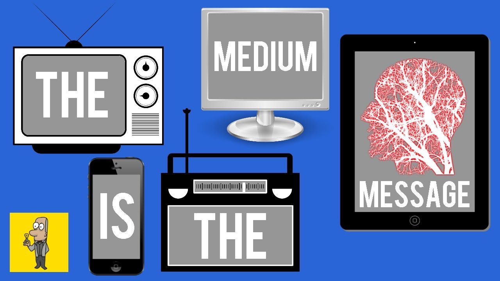

-

The garden of forking paths.
The garden of forking paths by Jorge Borges (1962) creates an obscure twist to a story, where the reader keeps pondering what would occur next. “This is a detective story in which the reader is the detective” (Borges, 1962).
-
The ode to Geocities.
A space once existed, where many early web users teased out their relationship with the web. On logging on to GeoCities a 2D space opened, where your presence was represented as neighborhoods which you would hop into and become part of a community. This space set the foundation of blogging sites and social networking as we know it today, A space that James Dladla would have flourished in were it not for the digital sectionide.
-
What hypertext is-Noah Wardrip-Fruin.
Nelson Wardrip-Fruin was interested in the documents of the future. Giving credit to Douglas Carl Engelbart, his questions of the early years of hyper texting we centered around: what you can do on the screen that you can also do on paper. As a writer, the transposition of the original magazine layout on the screen was important.
-

The medium is the message.
The era of new media, media art, or digital art has been characterized by the importance of the way we send and receive messages, over the message itself. Looking at satellite television for example, the audience of new media, then tweets and retweets about the show they watched.
-

Impact of "The medium is the message".
In his academic work, Understanding Media: The Extensions of Man (1964), Marshall McLuhan changes the landscape of media, more so, mass media, by asserted that “the medium is the message” (McLuhan, 1964: pp7).
-

User Interface.
UI designs usually use overarching theme colour style to show different information segments on the website. How then does the user knows what is important? Sharp colours difference might be used, but what about accessibility considerations. Some designs borrow from the Von Restorff Effect (1933) which is also known as the isolation effect. By isolating an item by colour, the design promotes the memory of that item.
-

Towards information geographies.
In the twenty first century, the internet has been overarchingly influential in ho society develops communication, up to the rise of digital vernaculars like the language of memes. This is a testament to the accomplishments and influence that internet technologies has on society.
-
Accessibility.
Studies have also shown that a more accessible website will attract larger audiences, require less maintenance cost and achieve better search results (Abou-Zahra.2018).